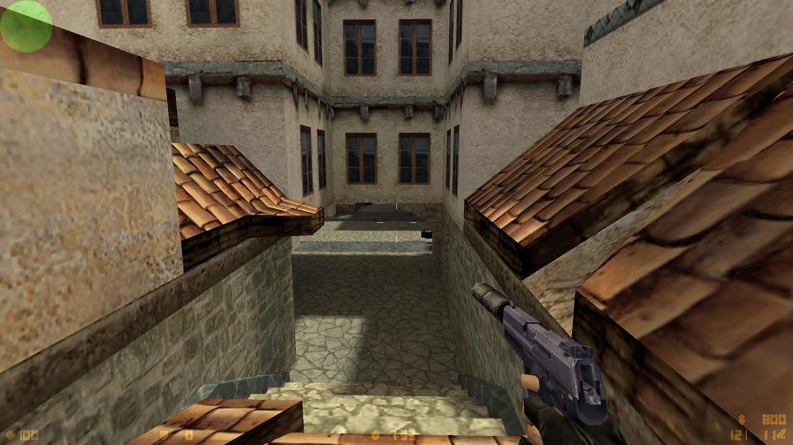
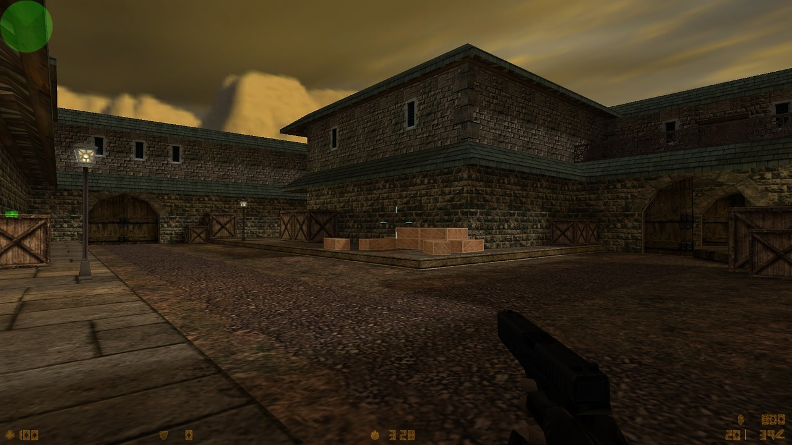
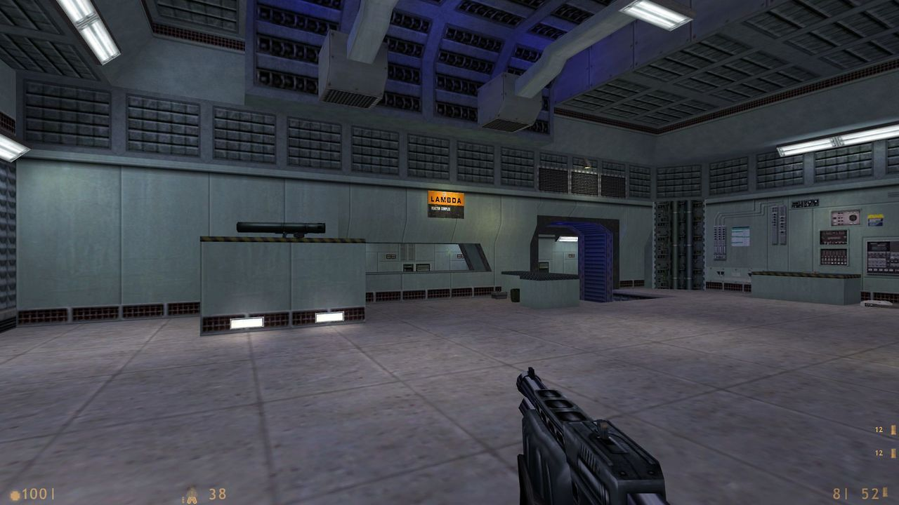
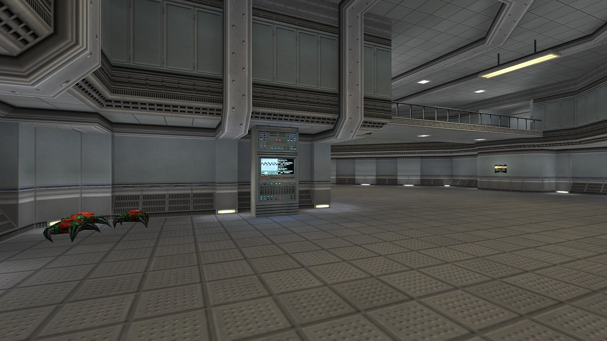

de_vertigo for Counter-Strike by Chris Auty

Dwell by Brenda Ellen Perdion
de_vertigo for Counter-Strike by Chris Auty
Dwell by Brenda Ellen Perdion
Afraid of Monsters by Andreas Rönnberg
Friendly fire isn’t
Titanium Nirvana for Public Enemy by Finn M. Matthiesen

Xen from Half-Life by Valve
gahhhhh for Counter-Strike by Nathaniel Miller
Boost for Half-Life deathmatch by Chris Auty

I beat that CAGED Half-Life mod! It’s really good, but really short. Though, for the low price of free, that’s not at all a bad thing.
It runs about as long, if not a little bit longer than a standard Half-Life chapter, and it does a damned good job at keeping you enthralled until it’s over. It’s almost crazy to think that a free mod you can beat in under an hour is one of the better video game experiences I’ve had all year, but here we are.
Gameplay is standard Half-Life 1 stuff. Run around, shoot dudes, solve a puzzle or two, climb through some vents. This is both a good thing and a bad thing because upon playing through this, I have come to the conclusion that the MP5 in Half-Life is a terrible weapon. The bullet spread on it is absolutely ridiculous and shooting at anyone outside of close range is a waste of ammo. You really have to utilize your other weapons to use the MP5 properly. I found myself throwing a grenade to scatter the guards, and then running in with the MP5 while they were bracing themselves.
That aside, the pacing in CAGED was just about perfect for me. The action happens in very small bite-sized chunks. There’s no fatigue that comes from constant combat, but there’s also never that much downtime that you get bored between the action bits. There’s more than enough ammo to get through, but it always feels like you could run out at any moment.
The environments are also surprisingly interesting to look at despite being mostly a grey concrete prison. I think Cayle George’s work on stuff like TF2 and Portal 2 really shine through in these aspects, especially with the humorous automated PA system that’s set up. I would be remiss to not mention the soundtrack, which is entirely composed up of Lazerhawk synthwave tracks. They add a dramatic amount of driving force to the action, to the point where I found myself over-extending in combat sessions just to keep the pace up.
I wholeheartedly recommend that everyone give this a go, it’s definitely worth an hour of your time.

Dustbowl for Team Fortress Classic by Valve
Classic demospawn hell map. You can’t not love it though.
Name: C.A.G.E.D.
Author: Cayle George, Future Games Select
Game: Half-Life
Type: Mapset
Link: http://store.steampowered.com/app/679990/HalfLife_Caged/
Release date: September 22, 2017A new mapset by a professional level designer with credits on games like Team Fortress 2 and Horizon: Zero Dawn, charging you with breaking out of a prison. Features a synthwave soundtrack by Lazerhawk, optional developer’s commentary, and a whole lotta wacky Goldsrc tricks (Which you can dissect for yourself: The source files are also available as a seperate download.)
Dustbowl for Team Fortress Classic by Valve
File under HL Rally or Half-Life??

ns_nothing for Natural Selection by Ken Banks

Half-Life: C.A.G.E.D. (upcoming) by Cayle George
Coming to Steam later today!
Half-Life: C.A.G.E.D. (upcoming) by Cayle George
Coming tomorrow!
Now with innovative boot based technology

ts_neobaroque for The Specialists by
Andreas Braunagel
Carnage in Heaven’s Gate Downtown for BrainBread

Halfquake Amen by muddasheep
I’m streaming this in 30 minutes (9am EDT) at https://gaming.youtube.com/c/Planetphillipcom/live for the RunThinkShootLive.com Classic of the Month!
Halfquake Amen by muddasheep
I’m streaming this tomorrow at 9am Eastern US time for the RunThinkShootLive.com’s Classic of the Month
Tune in here: https://gaming.youtube.com/c/Planetphillipcom/live

de_survivor for Counter-Strike by Michael Visser
Counter-Strike 1.3, released 16 years ago - September 12, 2001
That wraps up the look at the CS 1.3 maps. Thanks for walking down memory lane with us, back to regular posts tomorrow!

de_torn for Counter-Strike by Nick Coombe and Matt Coombe
Counter-Strike 1.3, released 16 years ago - September 12, 2001

de_survivor for Counter-Strike by Michael Visser
Counter-Strike 1.3, released 16 years ago - September 12, 2001
de_storm for Counter-Strike by Daank
Counter-Strike 1.3, released 16 years ago - September 12, 2001

de_torn for Counter-Strike by Nick Coombe and Matt Coombe
Counter-Strike 1.3, released 16 years ago - September 12, 2001

de_torn for Counter-Strike by Nick Coombe and Matt Coombe
Counter-Strike 1.3, released 16 years ago - September 12, 2001

de_survivor for Counter-Strike by Michael Visser
Counter-Strike 1.3, released 16 years ago - September 12, 2001

de_storm for Counter-Strike by Daank
Counter-Strike 1.3, released 16 years ago - September 12, 2001

de_survivor for Counter-Strike by Michael Visser
Counter-Strike 1.3, released 16 years ago - September 12, 2001
Kicking off a few days showing off CS 1.3′s ‘new’ maps from 16 years ago.
RIP A-Team van
de_torn for Counter-Strike by Nick Coombe and Matt Coombe
Counter-Strike 1.3, released 16 years ago - September 12, 2001

de_storm for Counter-Strike by Daank
Counter-Strike 1.3, released 16 years ago - September 12, 2001
de_survivor for Counter-Strike by Michael Visser
Counter-Strike 1.3, released 16 years ago - September 12, 2001
Kicking off a few days showing off CS 1.3′s ‘new’ maps from 16 years ago.

dm_training for Half-Life deathmatch by Tetsu0
For the recent TWHL Half-Life Reimagined Competition

Rapidcore for Half-Life deathmatch by Michael Schulz
Half-Life: Nightwatch (unreleased)


dm_undergroundlab for Half-Life deathmatch by The Mighty Atom

co_minas for Natural Selection by Droggog
Mind the Gap for Science & Industry by Neil Hollingworth
dod_vicenza for Day of Defeat by Jeremy Miller

Half-Life: C.A.G.E.D. (upcoming) by Cayle George
dm_silowar for Half-Life deathmatch by Trempler
dm_crystalline for Half-Life deathmatch by Victor-933
Pulse for Half-Life deathmatch by Adam Hawkins